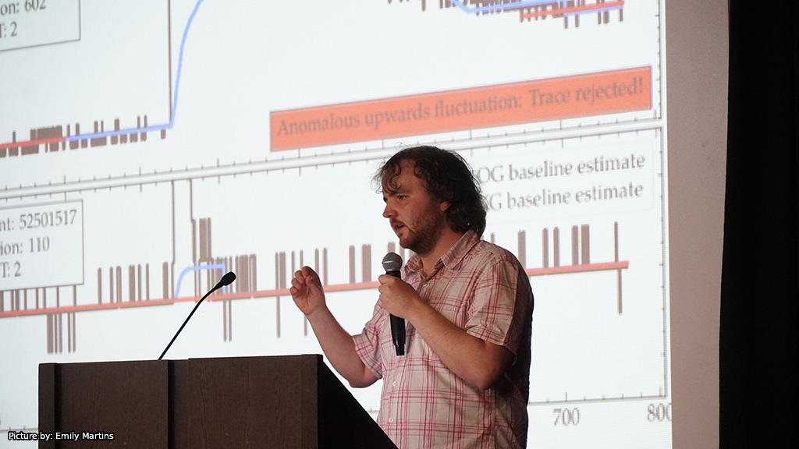

DPG Spring Meeting
Online
Propagation of core uncertainties in subordinate surface detector reconstructions at the Pierre Auger Observatory

Conferences & presentations
Conferences and presentations are part of communicating detector work, reconstruction methods, simulation studies, and air-shower physics across the Pierre Auger Collaboration and the broader astroparticle community.
Online
Propagation of core uncertainties in subordinate surface detector reconstructions at the Pierre Auger Observatory
Online
Online
A method to determine baselines of time traces at the Pierre Auger Observatory
Wuppertal, Germany
Resolving systematics in the high gain to low gain ratio
Buenos Aires, Argentina
Improving the signal accuracy by resolving systematics in the high-gain-to-low-gain ratio
Malargüe, Argentina
News on UB and the UUB extension of the baseline algorithm
Updates on the SD signal reconstruction and impacts on the spectrum
Malargüe, Argentina
Afterpulses in WCD traces
Malargüe, Argentina
Late pulses in SSD traces: particles?
Late pulses in SSD traces: particles!
Buenos Aires, Argentina
Current status of PhD studies
Malargüe, Argentina
Impact of including hadronic interactions and quenching in WCD and SSD detector simulations
SD-only Estimate of Muon Deficit & Impact of Improvements in Signal Estimation
Kolumvari, Greece
Probing hadronic interactions at the highest energies with the Pierre Auger Observatory
Wuppertal, Germany
Measuring the delayed neutron component in extensive air showers
Malargüe, Argentina
Subluminal pulses in the SSD
Malargüe, Argentina
Subluminal Pulses in the Scintillator Surface Detectors of Auger Prime
Malargüe, Argentina
An update on the current neutron analysis
L'Aquila, Italy
Neutrons in the SSD
Geneva, Switzerland
Characterizing the neutron component of extensive air showers with the Surface-Scintillator Detectors of AugerPrime
Malargüe, Argentina
Understanding the late hadronic shower component
Malargüe, Argentina
Updates on the universality reconstruction
Updating Geant 4.10 to 4.11